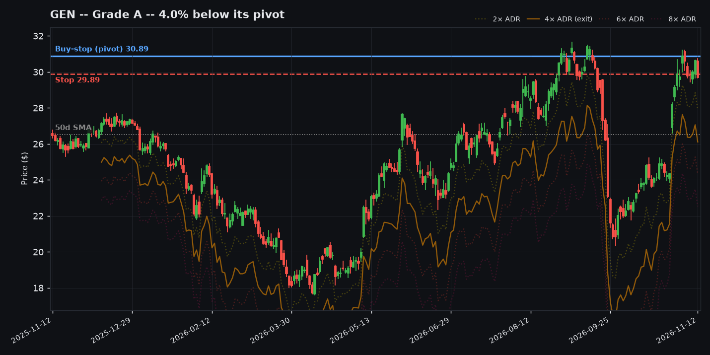
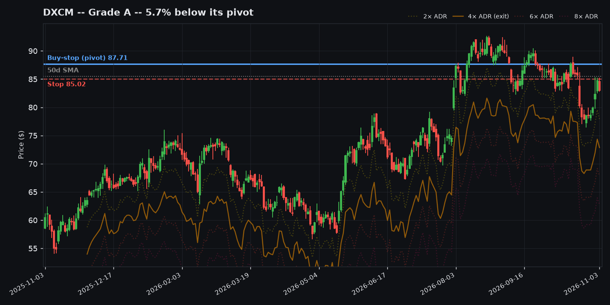
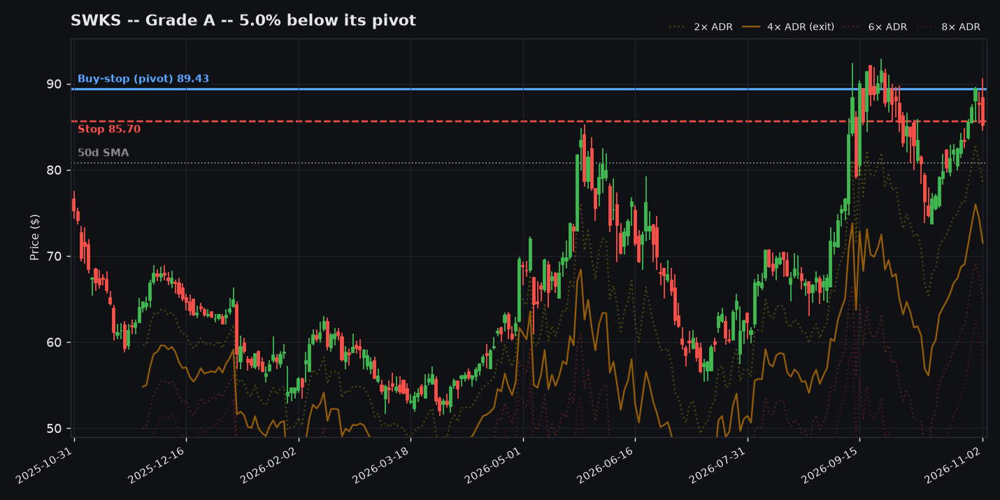
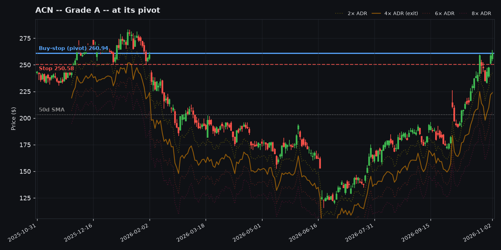
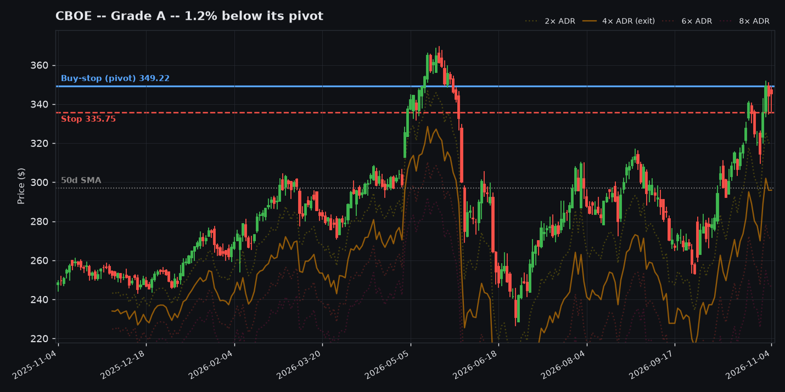
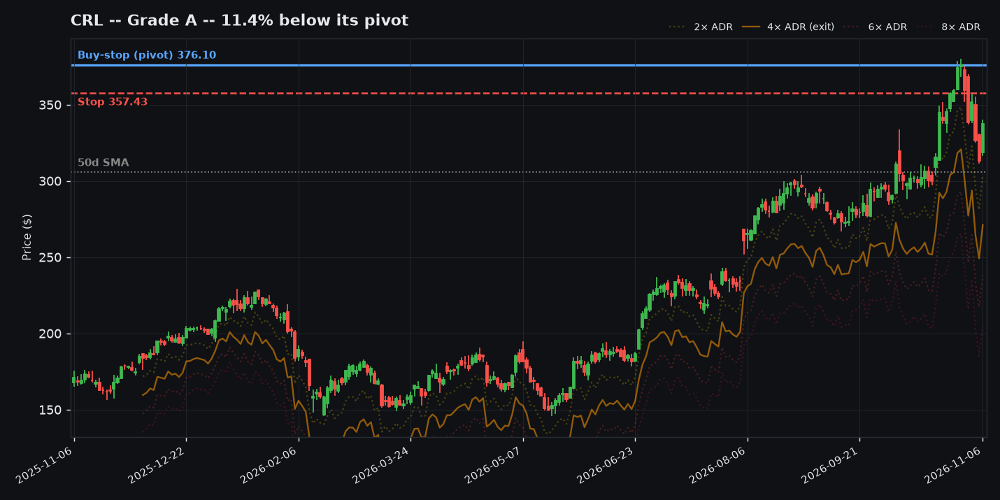
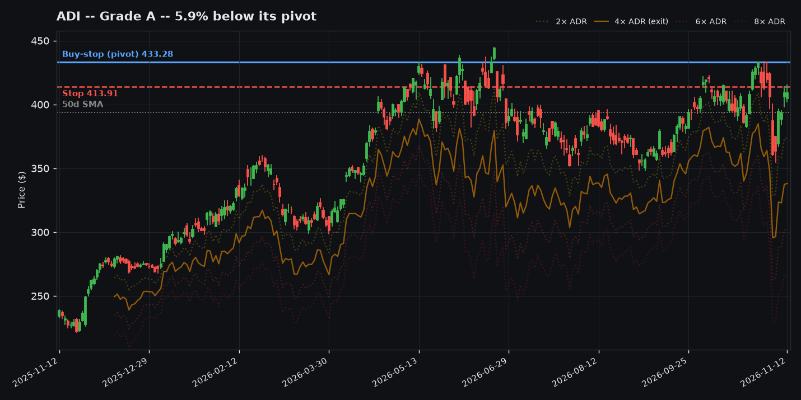

Worth Watching -- Charts
ⓘ Notes
10 tickers as of 2026-11-03, in the same order as the table above. Bars: blue = this ticker, green tick = grinder archetype avg, orange tick = rocket archetype avg. Screener output, not a recommendation.

Health Care -- Grade A+ -- 1.1% below its pivot
Pivot 25.76 / Stop 24.81 / ADR% 3.7%
Why score +4
- QM setup: the stronger of the two strategies in the backtest (+1)
- Stage 2: not Stage 1 (0)
- 10% below the 52-week high: a real pullback (+1)
- ADR 3.7%: fast enough to run (+1)
- Price $26: under $41, cheaper stocks ran further (+1)
Off 52wk high10.1%
Base tightness (10d/50d)1.5x
% above 50-day SMA4.0%
% above 200-day SMA19.3%
ADR%3.7%

Information Technology -- Grade A -- 0.6% below its pivot
Pivot 29.89 / Stop 28.94 / ADR% 3.2%
Why score +3
- QM setup: the stronger of the two strategies in the backtest (+1)
- Stage 2: not Stage 1 (0)
- 5% below the 52-week high: a real pullback (+1)
- ADR 3.2%: under 3.3% (0)
- Price $30: under $41, cheaper stocks ran further (+1)
Off 52wk high5.4%
Base tightness (10d/50d)0.9x
% above 50-day SMA12.0%
% above 200-day SMA22.6%
ADR%3.2%

Health Care -- Grade A -- 5.7% below its pivot
Pivot 87.71 / Stop 85.02 / ADR% 3.1%
Why score +3
- QM setup: the stronger of the two strategies in the backtest (+1)
- Stage 1: breaking out of a base, early in a new trend (+1)
- 10% below the 52-week high: a real pullback (+1)
- ADR 3.1%: under 3.3% (0)
- Price $88: $41 or more (0)
- Shakeout in the last 10 days: shown, not scored -- it didn't hold up on 2000-16 (0)
Off 52wk high10.2%
Base tightness (10d/50d)1.4x
% above 50-day SMA-3.0%
% above 200-day SMA11.1%
ADR%3.1%

Information Technology -- Grade A -- 4.7% below its pivot
Pivot 89.43 / Stop 85.81 / ADR% 4.0%
Why score +3
- QM setup: the stronger of the two strategies in the backtest (+1)
- Stage 2: not Stage 1 (0)
- 7% below the 52-week high: a real pullback (+1)
- ADR 4.1%: fast enough to run (+1)
- Price $89: $41 or more (0)
Off 52wk high6.6%
Base tightness (10d/50d)0.7x
% above 50-day SMA5.2%
% above 200-day SMA26.3%
ADR%4.0%

Health Care -- Grade A -- 7.6% below its pivot
Pivot 245.81 / Stop 222.29 / ADR% 9.6%
Why score +3
- QM setup: the stronger of the two strategies in the backtest (+1)
- Stage 2: not Stage 1 (0)
- 7% below the 52-week high: a real pullback (+1)
- ADR 9.6%: fast enough to run (+1)
- Price $246: $41 or more (0)
- Shakeout in the last 10 days: shown, not scored -- it didn't hold up on 2000-16 (0)
Off 52wk high7.1%
Base tightness (10d/50d)1.2x
% above 50-day SMA23.0%
% above 200-day SMA158.4%
ADR%9.6%

Information Technology -- Grade A -- 2.5% below its pivot
Pivot 260.94 / Stop 250.34 / ADR% 4.1%
Why score +3
- QM setup: the stronger of the two strategies in the backtest (+1)
- Stage 2: not Stage 1 (0)
- 9% below the 52-week high: a real pullback (+1)
- ADR 4.1%: fast enough to run (+1)
- Price $261: $41 or more (0)
Off 52wk high9.2%
Base tightness (10d/50d)1.3x
% above 50-day SMA24.4%
% above 200-day SMA35.5%
ADR%4.1%

Financials -- Grade A -- 1.4% below its pivot
Pivot 349.22 / Stop 335.88 / ADR% 3.8%
Why score +3
- QM setup: the stronger of the two strategies in the backtest (+1)
- Stage 2: not Stage 1 (0)
- 6% below the 52-week high: a real pullback (+1)
- ADR 3.8%: fast enough to run (+1)
- Price $349: $41 or more (0)
Off 52wk high5.7%
Base tightness (10d/50d)1.1x
% above 50-day SMA16.2%
% above 200-day SMA17.8%
ADR%3.8%

Health Care -- Grade A -- 6.9% below its pivot
Pivot 376.10 / Stop 359.62 / ADR% 4.4%
Why score +3
- QM setup: the stronger of the two strategies in the backtest (+1)
- Stage 2: not Stage 1 (0)
- 6% below the 52-week high: a real pullback (+1)
- ADR 4.4%: fast enough to run (+1)
- Price $376: $41 or more (0)
Off 52wk high6.4%
Base tightness (10d/50d)1.5x
% above 50-day SMA15.8%
% above 200-day SMA57.8%
ADR%4.4%

Information Technology -- Grade A -- at its pivot
Pivot 404.24 / Stop 390.48 / ADR% 3.4%
Why score +3
- QM setup: the stronger of the two strategies in the backtest (+1)
- Stage 2: not Stage 1 (0)
- 14% below the 52-week high: a real pullback (+1)
- ADR 3.4%: fast enough to run (+1)
- Price $404: $41 or more (0)
Off 52wk high14.5%
Base tightness (10d/50d)1.3x
% above 50-day SMA14.3%
% above 200-day SMA20.4%
ADR%3.4%

Information Technology -- Grade A -- 3.2% below its pivot
Pivot 433.28 / Stop 418.46 / ADR% 3.4%
Why score +3
- QM setup: the stronger of the two strategies in the backtest (+1)
- Stage 2: not Stage 1 (0)
- 5% below the 52-week high: a real pullback (+1)
- ADR 3.4%: fast enough to run (+1)
- Price $433: $41 or more (0)
Off 52wk high5.5%
Base tightness (10d/50d)1.4x
% above 50-day SMA7.6%
% above 200-day SMA12.9%
ADR%3.4%